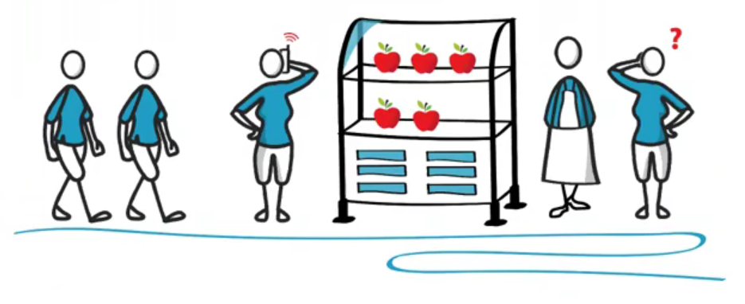

Транзакции
Транзакционность - это гарантия того что если произошел сбой данные не будут изменены.
Транзакция – это совокупность действий, которые выполняются либо все либо не выполняются ниодной.
Например перевод денег со счета на счет – это транзакция. То есть это совокупность операций с бд, которая
подразумевает снятие денег с одного счета, потом запись на другой счет.Все эти операции должны будут
выполненые, или все невыполнены.
Основные концепции транзакций (ACID)
- Атомарность – гарантия неделимости, означает что каждая транзакция должга быть зафиксирована полностью.
- Согласованность – это гарантия фиксировать только допустимые результаты.
- Изолированность – каждая транзакция не должна влиять на другие транзакции.
- Долговечность – гарантия того что если мы получили подтверждение проведения транзакции, то она будет проведена в любом случае даже если отключать электричество.
Уровни изоляции транзакций
Изолированность транзакций показывает то, насколько сильно влияют друг на друга параллельно выполняющиеся транзакции. Выбирая уровень транзакции, мы пытаемся прийти к консенсусу в выборе между высокой согласованностью данных между транзакциями и скоростью выполнения этих самых транзакций.
Read uncommited
Чтение того, что есть на данный момент. Даже если транзакция, которая записала новые данные, не завершена.
Этот уровень называют еще грязным чтением, так как не факт что вторая транзакция завершится успехом, первая уже сможет прочитать эти данные.
Но зато на этом уровне изоляции обеспечивается самая высокая скорость работы с данными.
Пример: подходит на рынке мужик покупать яблоки, на прилавке 5 яблок. Второй мужик в очереди разговаривает с женой по телефону и та спрашивает "сколько есть яблок". Мужик отвечает "пять". После чего первый мужик покупает 3 и уходит. Получается второй уже не сможет купить 5 как хотел.
Read commited
На этом уровне обеспечивается защита от грязного чтения. Мы читаем данные только транзакций которые завершились, и платим за это скоростью.
Пример: первый мужик также покупает яблоки. Второй также говорит по телефонус женой, она спрашивает "сколько яблок?". Мужик отвечет "Незнаю, но тут стоит мужик передо мной, че то покупает, непонятно что, надо подождать.
Repeatable read
Уровень, при котором читающая транзакция не видит изменения данных, которые были ею ранее прочитаны. Однако при повторном запросе, новые данные, соответствующие условиям запроса будут показаны.
Пример: если продавец вместо двух яблок из пяти выложит на прилавок две груши, то покупатель все равно будет думать, что там 5 яблок. Если же продавец выложит к пяти яблокам еще 3 яблока, то продавец этозаметит и поймет что всего 8 яблок.
Serializable
Транзакции польностью изолируются друг от друга, когда выполняется одна транзакция - остальные ждут. Они выполняется последовательно за другой, то есть никакого параллельного исполнения. Это самый медленный но и самый надежный уровень изоляции.
Пример: каждый из покупателей подходит к витрине только тогда, когда предыдущий покупатель расплатился и ушёл.